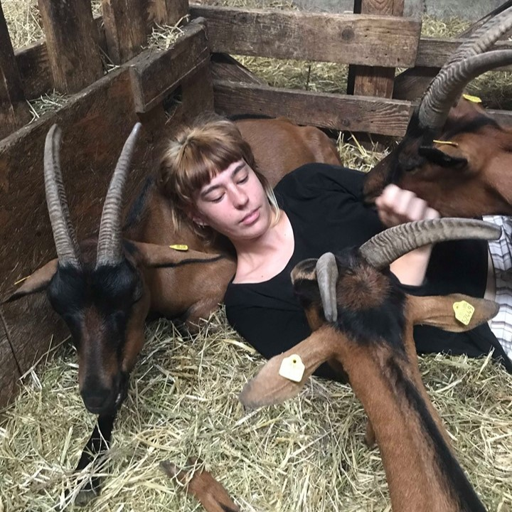
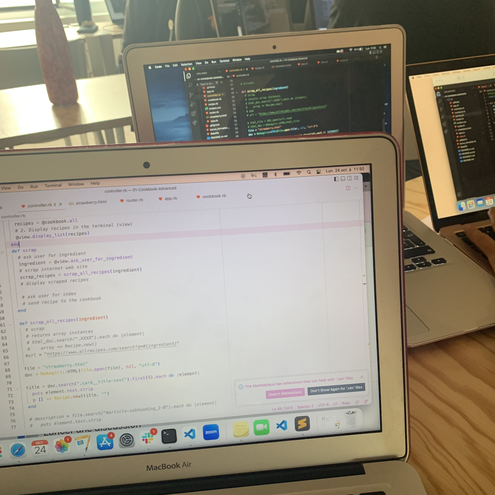
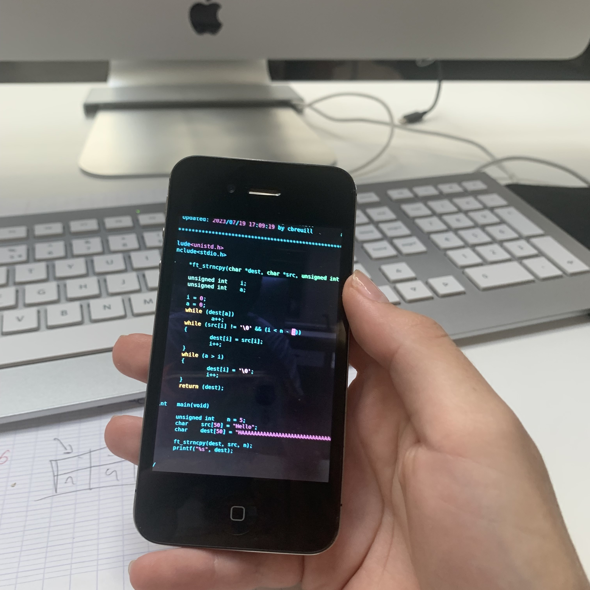
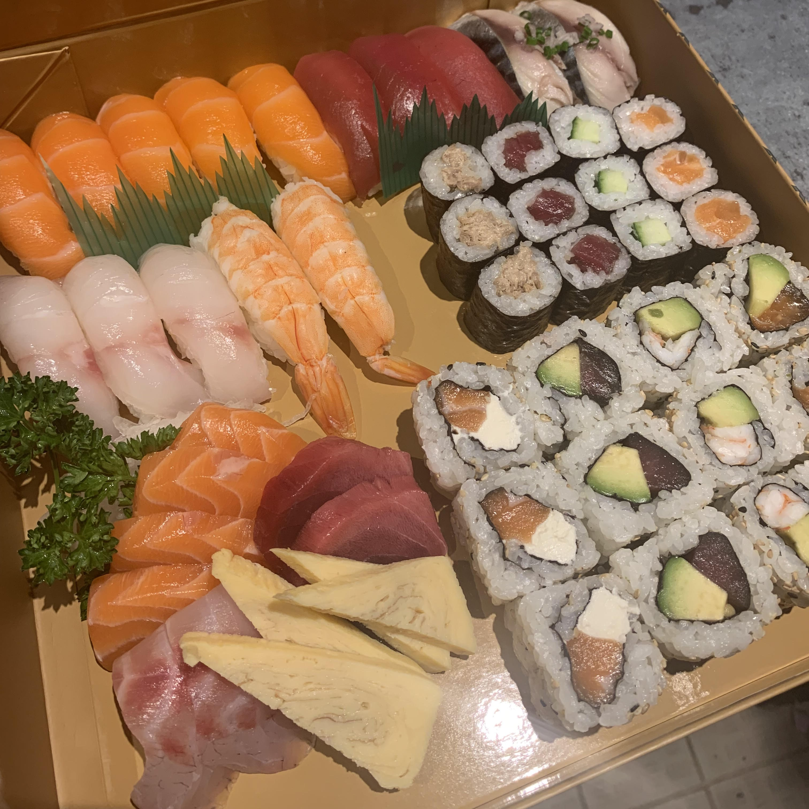

Mellinand-richier
Emmanuelle
touche à tout.mauvaise en rien.

Après avoir obtenu mon baccalauréat littéraire au lycée Montgrand, j'ai eu l'opportunité d'intégrer la classe préparatoire littéraire hypokhâgne. Les exigences élevées de cette formation ont développé en moi une véritable volonté d'apprendre et de me perfectionner sans cesse.

j’ai ensuite effectué un service civique dans une chevrerie pres de dresde, en Allemagne, où j’ai eu l’opportunité de decouvrir le precieux milieu de l’agriculture. J’ai participé a diverses tâches, tout en ayant la main sur toute la chaine de fabrication, de la fourche a l’assiette.
en plus de consolider mes connaissances en allemand, cette expérience m’a fait découvrir l’amour du travail bien fait et des responsabilités.
de retour en france et apres de nombreux stages dans des chevreries bio, j’ai pu integrer le cfppa olivier de serres en ardeche pour effectuer un bprea -brevet professionel de responsable d’exploitation agricole- en vue de mon installation.
j’y ai appris toutes les étapes de la construction d’un projet.

Mon desir de retourner a la ville et de trouver un metier plus stable m’a poussé à me lancer dans l’informatique. J’ai eu la chance d’integrer le bootcamp de developpement web fullstack du Wagon marseille, dans une promo women coders. étant curieuse de tout, je me suis très vite passionné pour le code avec un attrait particulier pour le back-end et l’algorythmie.

Souhaitant me spécialiser davantage en informatique et me lancer un défi, j'ai eu la chance de participer à la piscine de 42. Après un mois de travail intensif, je n'ai malheureusement pas été retenue, mais cette expérience m'a permis d'acquérir un solide bagage en connaissances informatiques et de renforcer ma détermination comme jamais auparavant.

en parallele, j’ai évolué dans le domaine de la restauration, en service premierement puis rapidement en tant que manager. ce poste à responsabilité a ancré chez moi un profond sens de la flexibilité, du savoir être et du service client.

Dans le cadre de ma spécialité développement logiciel, nous avons codé en python un jeu de pendu avec un historique des scores des parties.
Réalisation d'une calculatrice capable de faire des calculs avec plusieurs nombres et opérateurs.